Chapter 25: Tulna karna¶
comparatif et superlatif
Bada, sasta, itna hi achha, sabse achha, aur-aur zyada — hum din bhar compare karte rehte hain. French ye teen chhote words se karti hai, plus, moins aur aussi, aur ek saathi, que. Kuch irregular forms jod do — meilleur, mieux, pire — aur aap kuch bhi compare kar sakte ho.
- 1Adjectives compare karna: plus, moins, aussi … que
- 2Adverbs, nouns aur verbs: autant aur autant de
- 3The irregulars: meilleur, mieux, pire
- 4The superlative: le plus, la moins, les meilleurs
- 5Aur-aur zyada, same, jitna … utna
- 6In real life: flat chunna
masculinefeminineplural
Ek line me
plus / moins / aussi + adjective + que: Paris est plus cher que Lyon. — zyada / kam / utna hi … jitna.
- Le TGV est plus rapide que la voiture. — TGV car se zyada tez hai. [plew ra-PEED kuh]
- Ce film est moins drôle que le premier. — Ye film pehli wali se kam mazedar hai. [mwɛ̃ DROL]
- Ton français est aussi bon que le mien ! — Tumhari French utni hi achhi hai jitni meri! [o-SEE BÕ kuh]
25.1 Adjectives compare karna: plus, moins, aussi … que¶

Adjective pehli cheez — subject — se agree karta hai, hamesha ki tarah:
- Ma sœur est plus grande que moi. — Meri behen mujhse lambi hai. [plew GRÃD kuh MWA]
- Les fraises sont moins chères au marché. — Strawberries market me sasti (kam mehngi) hain.
- Ce restaurant est plus‿intéressant que l’autre. — Ye restaurant doosre se zyada dilchasp hai. [plew-zɛ̃-tay-ray-SÃ]
- Il fait aussi chaud à Delhi qu’à Chennai en mai ? — Kya May me Delhi me utni hi garmi hoti hai jitni Chennai me?
que ke baad: stressed pronoun¶
Agar kisi insaan se compare kar rahe ho, to que ke baad moi, toi, lui, elle, nous, vous, eux, elles use karo (Object pronouns dekho). Vowel se pehle que, qu’ ban jaata hai.
- Il est plus âgé que toi ? — Kya wo tumse bada hai?
- Nous sommes aussi fatigués qu’eux. — Hum bhi utne hi thake hain jitne wo. [kuh]
Dhyan do
- Galat: Elle est plus grande que je.
- Sahi: Elle est plus grande que moi.
- Kyun: Je ke baad verb aana zaroori hai. Bina verb ke que ke baad stressed pronoun moi use karo.
Dhyan do
- Galat: Il est plus grand de moi.
- Sahi: Il est plus grand que moi.
- Kyun: “Se” (than) hamesha que hota hai — kabhi de nahi (aur comme bhi nahi, jiska matlab “jaisa” hai).
Utna … nahi
Negative me aussi aksar si ban jaata hai: Ce n’est pas si difficile que ça. — Ye utna mushkil nahi hai.
25.2 Adverbs, nouns aur verbs: autant aur autant de¶
Wahi teen words adverbs ke saath bhi kaam karte hain:
- Tu peux parler plus lentement, s’il te plaît ? — Kya tum thoda dheere bol sakte ho, please? [plew lãt-MÃ]
- Elle court plus vite que son frère. — Wo apne bhai se tez daudti hai.
- On sort moins souvent qu’avant. — Hum pehle se kam bahar jaate hain.
Noun ke saath (kitna / kitne), de jodo: plus de, moins de — aur barabari autant de ban jaati hai. Verb ke saath (koi kaam kitna karte ho), plus, moins, autant verb ke baad rakho.
| Compare karo… | zyada | kam | utna hi (as much / as many) |
|---|---|---|---|
| adjective / adverb | plus … que | moins … que | aussi … que |
| noun | plus de … que | moins de … que | autant de … que |
| verb | verb + plus que | verb + moins que | verb + autant que |
- J’ai plus de travail que l’année dernière. — Mere paas pichhle saal se zyada kaam hai. [plews duh / plew duh]
- Il y a moins de monde le mardi. — Tuesday ko kam log hote hain.
- Elle a autant d’amis que toi. — Uske utne hi dost hain jitne tumhare. [o-tã da-MEE]
- Mon père travaille plus que moi, mais il dort autant que moi. — Mere papa mujhse zyada kaam karte hain, lekin mere jitna hi sote hain.
aussi ya autant?
aussi + adjective/adverb (aussi grand). autant + verb, autant de + noun (il mange autant, autant de pain).
Dhyan do
- Galat: J’ai aussi de livres que toi.
- Sahi: J’ai autant de livres que toi.
- Kyun: Noun ke saath barabari autant de hoti hai. Aussi sirf adjectives aur adverbs ke liye hai.
Dhyan do
- Galat: Il y a plus des voitures qu’avant.
- Sahi: Il y a plus de voitures qu’avant.
- Kyun: Quantity words (plus, moins, autant, beaucoup, trop) ke baad hamesha seedha de aata hai.
Number ke saath “se zyada” plus de hota hai: Il a plus de trente ans. (Wo tees se upar ka hai.)
25.3 The irregulars: meilleur, mieux, pire¶
English me “better” aur “best” hain; French me “better” ke do words hain, is par depend karta hai ki wo kya describe kar raha hai. Bon (achha, adjective) meilleur ban jaata hai. Bien (achhe se, adverb) mieux ban jaata hai.
| Basic | Comparative | Superlative |
|---|---|---|
| bon (achha — adj.) | meilleur(e)(s) [may-YUHR] | le / la / les meilleur(e)(s) |
| bien (achhe se — adv.) | mieux [MYUH] | le mieux |
| mauvais (kharab — adj.) | plus mauvais / pire [PEER] | le plus mauvais / le pire |
| mal (kharab tareeke se — adv.) | plus mal | le plus mal |
- Ce café est meilleur que l’autre. — Ye coffee doosri se behtar hai. (coffee ko describe karta hai → meilleur)
- Les mangues d’Inde sont meilleures ! — India ke aam zyada behtar hain! (meilleur agree karta hai: meilleures)
- Tu chantes mieux que moi. — Tum mujhse achha gaate ho. (gaane ka tareeka describe karta hai → mieux)
- Ça va mieux aujourd’hui ? — Kya aaj tabiyat behtar hai? [sa va MYUH]
- La situation est pire qu’hier. — Halaat kal se bhi kharab hain.
meilleur ya mieux?
Cheez ya insaan (noun) ko describe karna → meilleur (agree karta hai). Kaam kaise hota hai (verb) ko describe karna → mieux (kabhi nahi badalta).
Mashhoor galtiyan
- Galat: Ce gâteau est plus bon.
- Sahi: Ce gâteau est meilleur.
-
Kyun: Plus bon hota hi nahi (jaise English me “gooder” nahi hota). Lekin moins bon sahi hai.
-
Galat: Il parle français meilleur que moi.
- Sahi: Il parle français mieux que moi.
-
Kyun: Aap ye describe kar rahe ho ki wo kaise bolta hai (verb) → mieux. Compare karo: Son français est meilleur que le mien.
-
Galat: C’est plus bien comme ça.
- Sahi: C’est mieux comme ça.
- Kyun: Bien → mieux. c’est + koi judgment (behtar idea, behtar situation) ke saath French c’est mieux kehti hai.
25.4 The superlative: le plus, la moins, les meilleurs¶
“Sabse zyada / sabse kam” kehne ke liye plus ya moins se pehle le, la ya les lagao. Article noun se agree karta hai. Group ke “andar” kehne ke liye de use karo.
- C’est la plus belle ville du monde. — Ye duniya ka sabse khoobsurat sheher hai. [la plew BɛL VEEL]
- Paul est le plus jeune de la classe. — Paul class me sabse chhota hai.
- Ce sont les chaussures les moins chères du magasin. — Ye dukaan ke sabse sasté jootay hain.
- C’est la meilleure pizza que j’aie jamais mangée ! — Ye sabse badhiya pizza hai jo maine kabhi khayi! (superlative ke baad French subjunctive use karti hai: j’aie)
Dhyan do
- Galat: le plus grand pays dans le monde
- Sahi: le plus grand pays du monde
- Kyun: English kehti hai “in the world”; French kehti hai “of the world”: de (+ le → du).
Position: adjective kahan jaata hai?¶
Superlative me adjective apni normal jagah par rehta hai. Zyadatar adjectives noun ke baad aate hain — aur tab article do baar aata hai. Chhote “BAGS” adjectives (beauty, age, goodness, size: beau, jeune, bon, grand, petit…) noun se pehle aate hain. Adjectives dekho.

- C’est le quartier le plus animé de Mumbai. — Ye Mumbai ka sabse jeevant (lively) ilaaka hai.
- Voici notre plus petite chambre. — Ye hamara sabse chhota room hai. (possessive article ki jagah le leta hai)
Dhyan do
- Galat: C’est la ville plus intéressante.
- Sahi: C’est la ville la plus intéressante.
- Kyun: Doosre la ke bina sentence ka matlab “ek zyada dilchasp sheher” hota hai, “sabse dilchasp” nahi.
Adverbs aur verbs ka superlative: hamesha le¶
Adverbs aur verbs ke saath koi noun nahi hota jisse agree karna ho, isliye article hamesha le hota hai:
- C’est Anita qui court le plus vite. — Anita hi sabse tez daudti hai.
- Ce que j’aime le plus, c’est voyager. — Mujhe sabse zyada jo pasand hai, wo hai ghoomna. [luh PLEWS]
- De nous trois, c’est Karim qui cuisine le mieux. — Hum teeno me Karim sabse achha khana banata hai.
25.5 Aur-aur zyada, same, jitna … utna¶
| Expression | Matlab | Example |
|---|---|---|
| de plus en plus (+ adj.) | aur-aur zyada | Il fait de plus en plus chaud. |
| de plus en plus de (+ noun) | aur-aur zyada (of) | Il y a de plus en plus de touristes. |
| de moins en moins | aur-aur kam | Je regarde de moins en moins la télé. |
| le / la / les même(s) que | wahi jo / ek jaisa | J’ai le même téléphone que toi. |
| comme | jaisa, ki tarah | Il parle comme son père. |
| différent de | se alag | C’est très différent de l’Inde. |
| deux fois plus … que | do guna … jitna | C’est deux fois plus cher qu’ici. |
| plus …, plus … | jitna zyada …, utna zyada … | Plus je pratique, plus je progresse. |
- Les loyers sont de plus en plus chers à Paris. — Paris me kiraya din-ba-din mehnga hota ja raha hai. [duh plew-zã PLEW]
- Elle a la même robe que sa sœur. — Uski dress bilkul uski behen jaisi hai.
- Plus je dors, plus je suis fatigué ! — Jitna zyada sota hoon, utna zyada thaka rehta hoon!
- Moins on parle, mieux c’est. — Jitna kam bolo, utna achha.
Dhyan do
- Galat: Le plus je pratique, le plus je progresse.
- Sahi: Plus je pratique, plus je progresse.
- Kyun: English ke “the more … the more” me article hota hai; French me nahi.
plus ka uchcharan
Adjective se pehle plus ka s silent hota hai [plew] — ya vowel se pehle z-liaison [plewz]. Jab plus akela “zyada” ka matlab de (j’aime le plus, travailler plus), to s aam taur par sunai deta hai: [plews].
25.6 In real life: flat chunna¶
- — Alors, tu préfères quel appartement ? — — To, tumhe kaunsa flat pasand hai?
- — Le premier est plus grand et plus lumineux, mais il est aussi plus cher. — — Pehla zyada bada aur zyada roshan hai, lekin wo zyada mehnga bhi hai.
- — Le deuxième est moins cher et il a autant de chambres. — — Doosra sasta hai aur usme utne hi bedrooms hain.
- — Oui, mais le quartier est moins sympa. Et il est plus loin du métro. — — Haan, lekin ilaaka utna achha nahi hai. Aur wo metro se zyada door hai.
- — Franchement, le premier, c’est le meilleur choix. Ce sera mieux pour toi. — — Sach kahoon to pehla hi sabse achha choice hai. Tumhare liye wahi behtar hoga.
Dhyan do: le meilleur choix (noun ko describe karta hai) lekin ce sera mieux (ek general judgment).
À retenir: yaad rakho
- plus / moins / aussi + adjective + que: Paris est plus cher que Lyon. — zyada / kam / utna hi … jitna.
- aussi + adjective/adverb (aussi grand). autant + verb, autant de + noun (il mange autant, autant de pain).
- Cheez ya insaan (noun) ko describe karna → meilleur (agree karta hai). Kaam kaise hota hai (verb) ko describe karna → mieux (kabhi nahi badalta).
- Adjective se pehle plus ka s silent hota hai [plew] — ya vowel se pehle z-liaison [plewz]. Jab plus akela “zyada” ka matlab de (j’aime le plus, travailler plus), to s aam taur par sunai deta hai: [plews].
- Apne sheher ka kisi French sheher se paanch sentences me comparison karo: ek plus ke saath, ek moins ke saath, ek autant de ke saath, ek meilleur ya mieux ke saath, aur ek superlative. Phir Tout, chaque, quelqu’un… par aage…
25.7 Practice — Comparing¶
Exercise 1
Ma sœur est ___ grande que moi.
- plus
- plus de
- la plus
- autant
Jawaab
plus
plus + adjective + que.
Exercise 2
Ce gâteau est ___ que l'autre. (behtar)
- plus bon
- mieux
- meilleur
- plus bien
Jawaab
meilleur
bon → meilleur (ye cake ko describe karta hai).
Exercise 3
Tu chantes ___ que moi. (behtar)
- meilleur
- mieux
- plus bon
- meilleure
Jawaab
mieux
Ye gaane ka tareeka describe karta hai (verb) → mieux.
Exercise 4
J'ai ___ livres que toi. (utne hi)
- aussi de
- autant de
- aussi
- autant des
Jawaab
autant de
Noun ke saath barabari = autant de.
Exercise 5
C'est la ville ___ intéressante de la région.
- plus
- la plus
- le plus
- très
Jawaab
la plus
Adjective noun ke baad → article dobara: la ville la plus intéressante.
Exercise 6
C'est le plus grand pays ___ monde.
Hint: duniya me
Jawaab
du
Superlative + de: du monde.
Exercise 7
Il fait de plus en plus ___ (garam).
Jawaab
chaud
de plus en plus + adjective.
Exercise 8
Elle a le ___ sac que moi. (wahi)
Jawaab
même
le même … que = wahi jo.
Exercise 9
Il est plus âgé que ___. (mujhse)
Jawaab
moi
que ke baad stressed pronoun moi use karo.
Exercise 10
La situation est ___ qu'hier. (aur kharab)
Jawaab
pire / plus mauvaise
mauvais → pire (ya plus mauvais).
Exercise 11
Galat word par tap karo.
Il parle anglais meilleur que moi.
Jawaab
Galat shabd: meilleur.
Sahi roop: Il parle anglais mieux que moi.
Wo kaise bolta hai ye describe kar raha hai → mieux.
Exercise 12
Galat word par tap karo.
C'est le plus beau jour dans ma vie.
Jawaab
Galat shabd: dans.
Sahi roop: C'est le plus beau jour de ma vie.
Superlative ke baad 'in' = de.
Exercise 13
Galat word par tap karo.
Il est plus grand de son frère.
Jawaab
Galat shabd: de.
Sahi roop: Il est plus grand que son frère.
'than' = que.
Exercise 14
Words ko sahi order me lagao: Jitna zyada practise karta hoon, utna improve karta hoon.
Shabd: je / progresse / plus / Plus / pratique / je
Jawaab
Plus je pratique plus je progresse
plus …, plus … bina article ke.
Exercise 15
French ko uske matlab se milao.
| A | B |
|---|---|
| meilleur | aur kharab |
| mieux | utna hi |
| pire | aur-aur kam |
| autant | behtar (adj.) |
| de moins en moins | behtar (adv.) |
Jawaab
meilleur — behtar (adj.); mieux — behtar (adv.); pire — aur kharab; autant — utna hi; de moins en moins — aur-aur kam
Comparison ke irregular aur fixed forms.
Exercise 16
Zor se bolo.
Tu peux parler plus lentement s'il te plaît
Jawaab
Bolo: Tu peux parler plus lentement s'il te plaît
Seekhne wale ke liye sabse kaam ka comparison!
Exercise 17
Zor se bolo.
C'est la plus belle ville du monde
Jawaab
Bolo: C'est la plus belle ville du monde
BAGS adjective noun se pehle ke saath superlative.
Next step
Apne sheher ka kisi French sheher se paanch sentences me comparison karo: ek plus ke saath, ek moins ke saath, ek autant de ke saath, ek meilleur ya mieux ke saath, aur ek superlative. Phir Tout, chaque, quelqu’un… par aage badho.